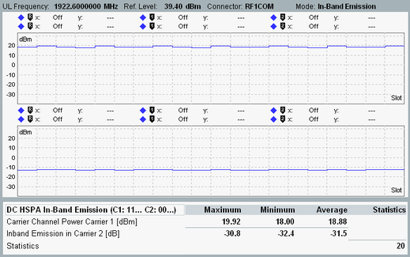

This section describes the results in in-band emission mode.
The result view displays two diagrams and a table with statistical results.

The diagrams show the measured UE power vs slot of the uplink carrier one (upper diagram) and two (lower diagram).
The measured range of slots is configurable, see "Measurement Length". For background information concerning the test steps, see "DC HSPA In-Band Emission TPC Setup".
The first table row displays the carrier channel power. This result is provided for the carrier where the UE transmits at the maximum output power.
The second row provides the UE output power in the indicated carrier relative to the UE output power in the other carrier (as displayed in the first row). This result is provided for the carrier where the UE transmits at the minimum output power.
The columns indicate the maximum, minimum and average value.
"Statistics" indicates how many values have been considered for the statistical evaluation.
For query of the results via remote control, see "Measurement Results".